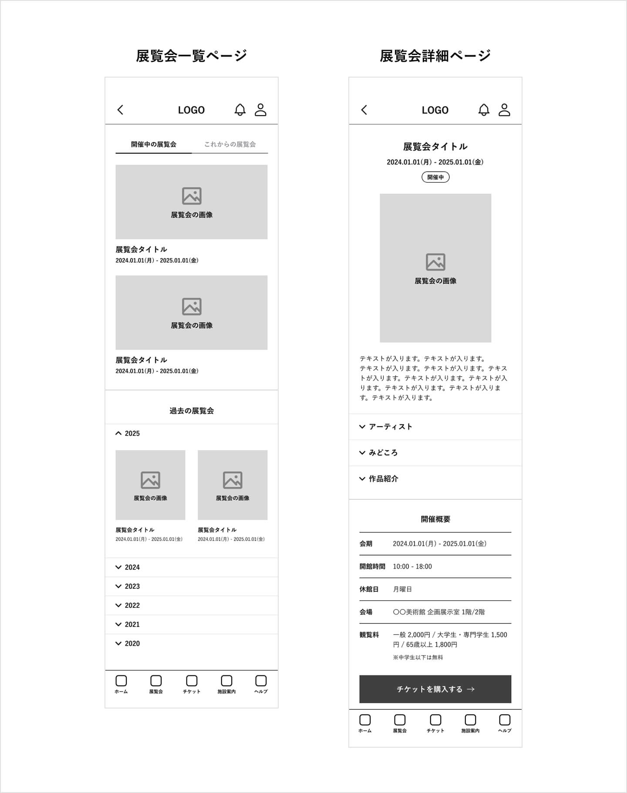
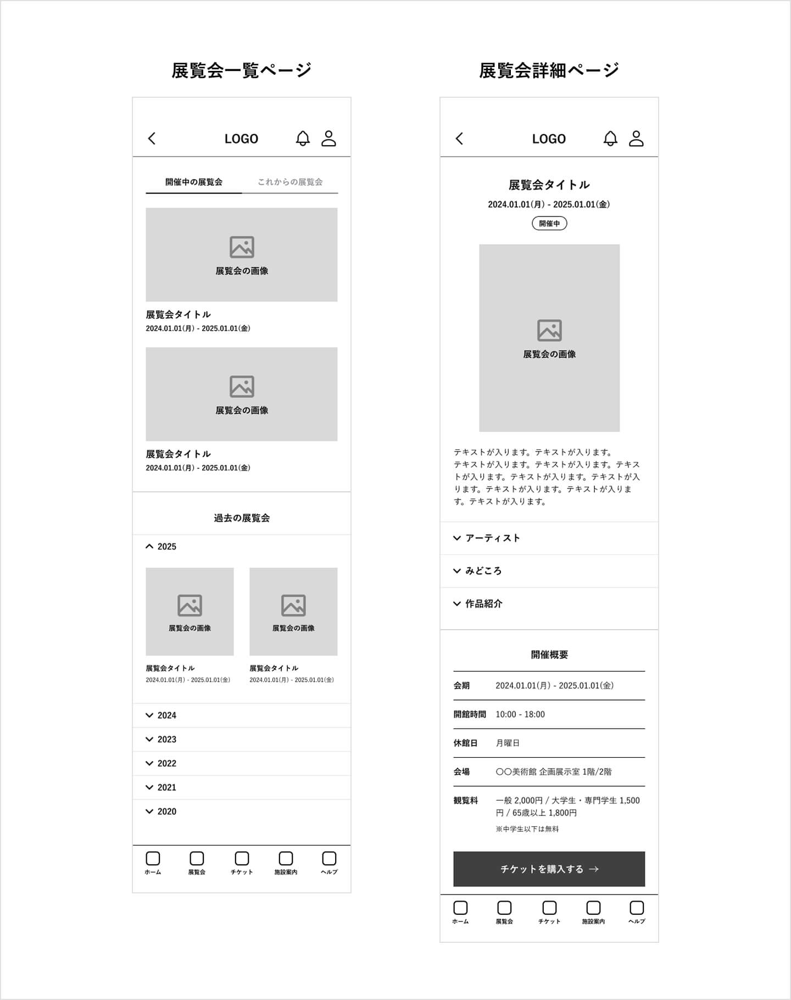

✴︎ 概要
「桃源美術館」アプリは、架空の美術館を想定した公式アプリです。
展覧会やイベント情報を分かりやすく届け、来館前の情報収集からスケジュール検討、チケット購入までをシームレスに行えることを目的としています。
✴︎ 課題と目標
主な課題
美術館の展覧会情報は、公式サイトやSNS、メディアなど複数の場所に分散しており、「正確な情報を素早く把握したい」「来館計画を立てたい」ユーザーにとって探す手間が大きいという課題がありました。
目標
ユーザーが興味のある展覧会情報を迷わず取得し、来館スケジュールの検討からチケット購入までを一連の流れとして完結できる体験を提供します。
✴︎ ユーザー理解
ユーザーリサーチ
本プロジェクトでは、美術館利用者を対象とした既存のアンケート調査結果をリサーチ資料として活用しました。
来館頻度や同行者、情報収集の方法、チケットに対する意識などを整理することで、「美術館に関心はあるが、情報取得や来館準備に負担を感じている層」が一定数存在することが分かりました。
参考資料：美術館に関する意識調査（関東エリア）2024年度調査報告書
ペインポイント
1. 情報が分散していて探しにくい
展覧会情報を知るきっかけが複数あり、公式情報にたどり着くまでに手間がかかる。
2. 来館前に必要な情報がまとまっていない
開催期間・混雑・アクセス・チケットなどを個別に確認する必要があり、計画が立てづらい。
3. チケット購入までの導線が分かりにくい
興味を持っても、購入方法や流れが直感的でないと行動に移りにくい。
→ これらの課題を踏まえ、「必要な情報を一か所に集約し、次の行動が自然に分かる設計」を重視しました。
✴︎ ペルソナ ① 1人で来館する30代男性
- 名前
- 浅川 翔吾
- 居住地
- 東京都杉並区
- 年齢
- 33歳
- 職業
- フルスタックエンジニア（リモートワーク多め）
- 世帯
- 独身一人暮らし
- 生活スタイル
- 平日は忙しいが、休日は静かに過ごしたい
建築や美術、デザインに関心あり
情報収集は得意だが、効率を重視するタイプ
ペインポイント
- 展示情報があちこちのサイトに分散していて、調べるのが手間
- 開催期間やアクセス情報をいちいち確認しないといけない
- 「行こうと思っていた展示」を気づいたら逃すことがある
ゴール
- 自分の関心に合う展示を効率よく見つけたい
- 行ける日をすぐ判断できるようにしたい
問題ステートメント
浅川翔吾は、効率を重視するフルスタックエンジニアであり、
自分の興味に合った展示会情報を効率的に見つけ、スケジュールを立てるために、
一元化された展示会情報へのアクセスを必要としています。
✴︎ ペルソナ ②友人と来館する20代女性
- 名前
- 石井 美乃梨
- 居住地
- 東京都中野区
- 年齢
- 24歳
- 職業
- 化粧品メーカーの企画職
- 世帯
- 独身一人暮らし
- 生活スタイル
- SNSや口コミで流行をキャッチするのが得意
友人と「映える」スポット巡りを楽しむ
“雰囲気”を重視する傾向
ペインポイント
- SNSや口コミで知った展覧会の公式情報やチケットページにたどり着きづらい
- 友人と予定を合わせるのが大変
- 行くまでの調べ物が面倒でテンションが下がる
ゴール
- 得た展覧会情報をすぐ詳細確認・予約できるようにしたい
- 友人と行く展覧会の計画をストレスなく進めたい
問題ステートメント
石井美乃梨は、流行に敏感な化粧品メーカーの企画職であり、
SNSで知った展示会について、公式で正確な情報をすぐに確認し、
友人と共有・予約できるシームレスな導線を必要としています。
✴︎ ペルソナ ③配偶者と来館する60代男性
- 名前
- 中村 修司
- 居住地
- 神奈川県横浜市
- 年齢
- 67歳
- 職業
- 定年退職後、趣味で地域活動中
- 世帯
- 妻と二人暮らし
- 生活スタイル
- 休日は妻と美術館や庭園を巡るのが楽しみ
スマホは使うが複雑な操作は苦手
計画的で、混雑やトラブルを避けたいタイプ
ペインポイント
- 公式サイトやチケット予約サイトが複雑でわかりづらい
- オンライン予約やQRコードなどのデジタル操作に不安がある
- 混雑が事前に把握できず予定を立てづらい
ゴール
- シンプルでわかりやすい情報にすぐアクセスしたい
- 妻と快適に過ごせる一日を計画的に楽しみたい
問題ステートメント
中村修司は、定年退職後に地域活動に勤しむ地域活動者であり、
一目で理解できるわかりやすい情報を通じて、美術館訪問を計画する際に、
来館プランを立てるためのサポートを必要としています。
✴︎ ワイヤーフレーム
ワイヤーフレームでは、来館前の情報収集からチケット購入・利用までを、迷わず一連の流れで完結できる体験を重視して設計しました。
トップページ
トップページでは、現在開催中の展覧会や直近のスケジュールを一目で把握できるよう、展覧会情報・カレンダー・当日の開催状況を集約しています。これにより、ユーザーが「今行ける展覧会」を探すために複数の画面を行き来する必要をなくしました。
展覧会一覧・詳細
展覧会一覧・詳細ページでは、会期・概要・作品情報・チケット購入といった来館前に必要な情報を一画面内で把握できる情報構造を意識しています。特に、興味を持ったタイミングで次の行動（チケット購入）へ自然につながる導線を意図しました。
チケット購入フロー
チケット購入フローでは、 券種選択から支払い、購入完了、電子チケット表示までを段階的かつシンプルなステップで構成しています。 各画面で判断に必要な情報のみを提示することで、操作負荷を抑え、安心して購入できる体験を目指しました。
 

✴︎ ユーザビリティ調査
調査概要
ワイヤーフレームおよびプロトタイプを用いて、非モデレート形式のユーザビリティ調査を実施しました。
参加者には、展覧会の詳細確認、チケット購入、チケット表示、最新ニュースの確認といった主要タスクを体験してもらいました。
- 調査方法：非モデレート型
- 対象：Google UX Design コース受講者
- 回答者数：7名
結果として分かったこと
1. 主要タスクの達成しやすさ
- 展覧会の詳細確認は、全参加者が「非常に簡単」と評価した
- チケット購入フローは「スムーズ」「分かりやすい」という回答が多く、操作上の大きな問題は見られなかった
- 購入後のチケットおよびQRコード表示は、ほとんどの参加者が問題なく行えた
2. 購入フローでの不満
- 購入フロー内の「注文内容確認ページ」は、冗長に感じられるという意見が一部あった
3. 最新のお知らせの見つけやすさ
- 最新のお知らせは見つけにくいと感じた参加者が多く、特にベルアイコンの意味が直感的ではないという指摘が複数あった
→ 結果、全体評価の平均は 4.14 / 5 となった
✴︎ モックアップ
ユーザビリティ調査の結果を踏まえ、情報の見つけやすさと操作の分かりやすさを中心にデザインを作成しました。
情報構造の整理（トップページ）
トップページでは、重要度の高い情報が一目で把握できるような構成。
展覧会のスケジュールなどの情報を視覚的に整理し、ユーザーが現在の状況を直感的に理解できる設計にしています。
また、展覧会情報はカード形式で、一覧での見やすさと比較のしやすさを高めました。
チケット購入フローの改善
ユーザビリティ調査の中で、チケット購入で日時選択ができないのは、理想的なスケジュール設計がしにくいという声があったため、
日時選択 → 券種選択 → 支払い → 完了
というフローに変更しました。
- カレンダーによる来館日の選択
- 時間帯を選ぶシンプルなUI
を採用することで、日時予約制チケットの仕組みを直感的に理解できるようにしました。
✴︎ 振り返り
成果
このプロジェクトでは、美術館の展覧会情報が分散してわかりづらいという課題に対して、情報を一元化し、情報収集やスケジュール検討、チケット購入の流れをシームレスに体験できるUX設計ができました。
ユーザビリティ調査を通して情報の構成や優先度、導線を見直すことで、迷いを生まないUIへ改善することができました。
学んだこと
UXデザインにおいて重要なのは、やみくもに機能を増やすことではなく、ユーザーが意思決定するために必要な情報を適切に提示することだと学びました。
UI設計やプロトタイプ制作をスムーズに進めるため、ワイヤーフレームの段階で構造と導線を丁寧に検討することの重要性も実感しました。